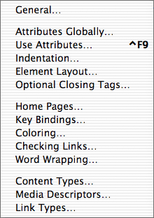
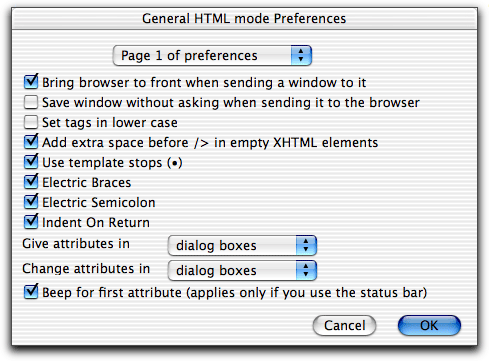
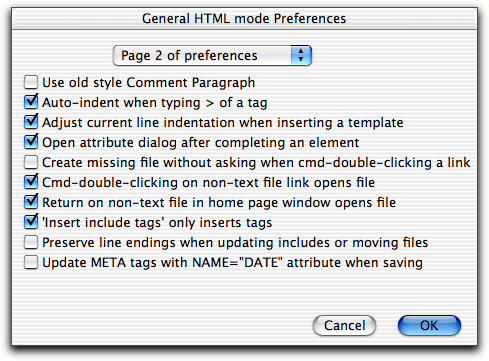
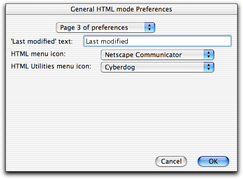
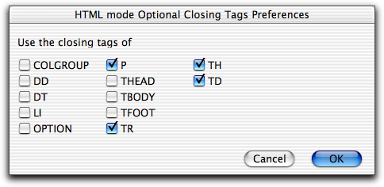
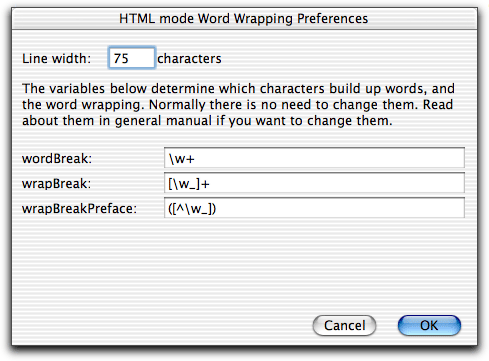
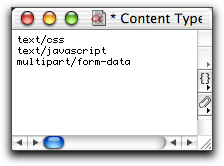

Preferences

HTML mode is highly customizable. You can modify its behavior in several
ways. This page describes all settings you can do using the menu of the HTML menu.
General

Bring browser to front when sending a window to
it
If checked, when you send a file to the browser, the browser will be
brought to the foreground. If you have lots of screen space and are just
validating, uncheck this flag to leave the browser in the background and
Alpha in the foreground. By default the browser is brought to the
foreground.
Save window without asking when sending it to the
browser
If checked, when you send a file to the browser, the window is saved
automatically without asking you. By default you are asked if you want to
save the window.
Set tags in lower case
If not checked, elements will be like <P>; if checked, like
<p>. By default upper case is used in HTML. In XHTML lowercase is
required.
Add extra space before /> in empty XHTML elements
If checked, elements such as <br/> will get an extra space
before />, like <br /> in XHTML. This for better
compatibility with some browsers.
Use template stops (•)
If checked, will insert the • characters.
By default the • characters are inserted.
Electric Braces, Electric Semicolon, Indent On Return
Give attributes in dialog boxes/status
bar
To choose whether you want to use dialog boxes or the status bar when you
give attributes to an HTML element. By default dialog boxes are used.
Change attributes in dialog boxes/status
bar
To choose whether you want to use dialog boxes or the status bar when you
change the attributes in an existing HTML element by using in the
menu or by cmd-double clicking on an opening tag. By default
dialog boxes are used.
Beep for first attribute (applies only if you use
the status bar)
If checked, and you input element attributes from the status bar, Alpha
will beep when asking for element attribute information there. By default
Alpha will beep. This applies only if you use the status bar.

Use old style Comment Paragraph
In HTML mode 3.0 I made a change in (Un)Comment Paragraph, which made
Uncomment Paragraph incompatible with comments created by Comment Paragraph
in older versions of HTML mode. If you have old paragraph comments enable
this preference to ignore the change in (Un)Comment Paragraph.
Auto-indent when typing > of a tag
Adjust current line indentation when inserting a
template
If this preference is enabled Alpha adjusts the indentation of the current
line when inserting a template at the beginning of the line. This applies both
when you insert a template using a menu item and when you use word
completion. This behavior helps you to make sure the code is indented
according to your preferences. By default Alpha adjusts the indentation.
Open attribute dialog after completing an element
When checked Alpha will open an attribute dialog - or ask you for the
attributes in the status bar - when you uniquely word complete an opening
element tag <ELEM to a template including a closing tag. Uncheck if you
prefer to type the attributes too, and do not want the dialog.
Create missing file without asking when
cmd-double-clicking a link
If checked and you cmd-double-click a link
pointing to a file which does not exist, Alpha will create an empty file and
open it without first asking you if you want to create the file. By default you
are asked before the file is created.
Cmd-double-clicking on non-text file link opens
file
If checked, and you cmd-double-click on a link pointing to a non-text file
it is opened in the application it was created in. If not checked, nothing
happens when you click on such a link. By default the file is opened. This
setting also applies when you use in
the contextual menu.
Return on non-text file in home page window opens
file
If checked, and you hit return on a non-text file in a home page window
it is opened in the application it was created in. If not checked, nothing
happens when you hit return on such a file. By default the file is opened.
'Insert include tags' only insert tags
If checked, Alpha will only insert the include tags when you use 'Insert
include tags', and not insert the file to be included until you update the
window. But default only the tags are inserted.
Preserve line endings when updating includes or moving
files
If checked, Alpha will make sure the type of line endings used in each
file - Mac, Windows, or Unix - is preserved when updating files with include
tags or when moving files. By default line endings are not preserved,
because this slightly slows down the updating.
Update META tags with NAME="DATE" attributes when
saving
If checked, HTML mode will look for tags
<META CONTENT="2001-01-14" NAME="DATE"> in the document every time you
are saving and update the date. By default this is not done.

'Last modified' text
The default text when you insert last modified tags.
HTML menu icon
The icon for the HTML menu.
HTML Utilities menu icon
The icon for the HTML Utilities menu.
Attributes Globally
See the section Deciding which attributes to be
asked about.
Use Attributes
See the section Deciding which attributes to be
asked about.
Indentation
See the section Indentation.
Layout
See the section Controlling the layout of the code.
Optional Closing Tags
Lets you specify if you want to use the closing tag of those elements which
have an optional closing tag.

Home Pages
See the section Configuring HTML mode.
Key Bindings
See the section Key bindings.
Coloring
See the section Coloring.
Checking Links
See the section Checking links.
Word Wrapping

Line width
Determines at which position lines are wrapped. This is the HTML mode
specific version of the variable
Fill Column in
the global settings dialog .
wordBreak
This controls which characters
build up words,
wrapBreak
wrapBreakPreface
and these ones control word
wrapping.
Read about them in the general manual if you want to change them (should
usually not be needed).
To edit the list of content types, media descriptors, and link types, which
appear in the popup menus of the attribute dialog boxes. A window is opened
where you can edit these list. Separate each item in the list with a space
or a new line. Anything item containing spaces must be put within quotes.
Close the window to save the changes. Cancel the changes by holding down
the shift key while clicking the window's close box.

Previous page
Next page